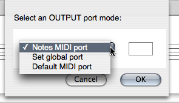

OpenMusic DocumentationHiérarchie de section : OM 6.6 User Manual > MIDI > Rendering and Playback > Managing MIDI Ports
OpenMusic DocumentationHiérarchie de section : OM 6.6 User Manual > MIDI > Rendering and Playback > Managing MIDI Ports
Navigation : page précédente | page suivante
Attention, votre navigateur ne supporte pas le javascript ou celui-ci à été désactivé. Certaines fonctionnalités de ce guide sont restreintes.
Managing MIDI Ports
The MIDI port selection determines how MIDI events are directed to one or several synthesizers.
This can be configured at several levels.
Default MIDI Ports
In the OM |

|
The Set MIDI Ports button allows to set the different MIDI ports to the devices connected (and detected) on the computer (see below).
MIDI Port Setting for Score Objects
In the score objects, it is possible to assign a MIDI Port to each individual note. A global behavior for the object can however be controlled.
|

|
These options are available at selecting the MidiShare player for a given box (in a patch or in a maquette) or in the score editors via the |
MidiShare Setup
OM MIDI Preferences
MidiShare is OM's default MIDI player. The input / output connections to the various devices of the system are defined in the OM MIDI preferences tab via the Set MIDI Ports button.
By default, port #0 is the only input and output connection to the system's MIDI inbuilt synthesizer (when available). The notes in the score objects (if directed to port 0) are therefore sent to this synthesizer. To change the input/output devices connected to a given port, select the corresponding cell in the |
{kind=link}
Références :
Plan :
Navigation : page précédente | page suivante
A propos...(c) Ircam - Centre Pompidou